The-Coaxys / field stationsignal locked · 75 ohm
Caxys
I keep servers boring so the interesting things can run.
Patch bay plug something in
Stack what I reach for

Scars learned the hard way
wireguard the default port got blocked by an ISP. a custom high port fixed it swapfile fallocate lies on XFS. dd the file, and never swapoff under pressure backup tar --one-file-system quietly skips bind mounts. check what you ship monitoring a FAIL on a live database or redis dump is just a file changing mid-read